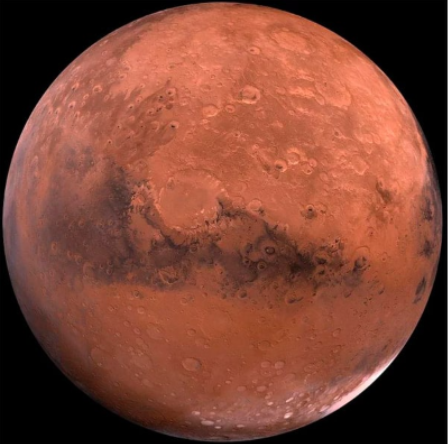

Si la Tierra es conocida como el “planeta azul”, a Marte se le suele llamar 'planeta rojo',
lógicamente por su aspecto rojizo. Posee el volcán más grande de los ocho planetas del Sistema
Solar. Uno de los grandes hallazgos cientificos de los últimos años ha sido encontrar en Marte
agua subterránea. Tiene dos satélites llamados Fobos y Deimos.
Es uno de los planetas más investigados y existen muchas leyendas sobre que en él existen seres
inteligentes. De hecho, la palabra “marciano” se refiere a “habitante de Marte”. Esto, al menos por
ahora, es pura ciencia ficción.
Su nombre es en honor a Marte, dios romano de la guerra.

>